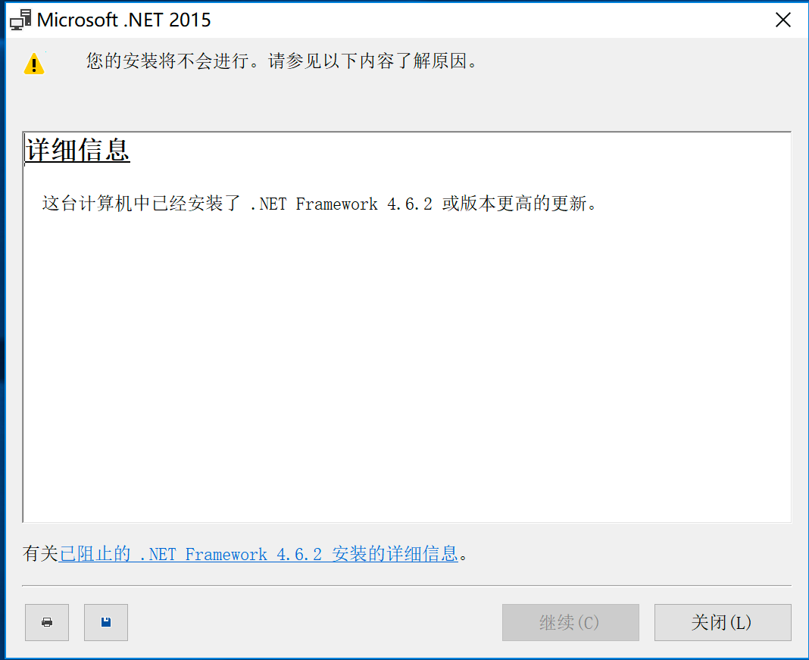
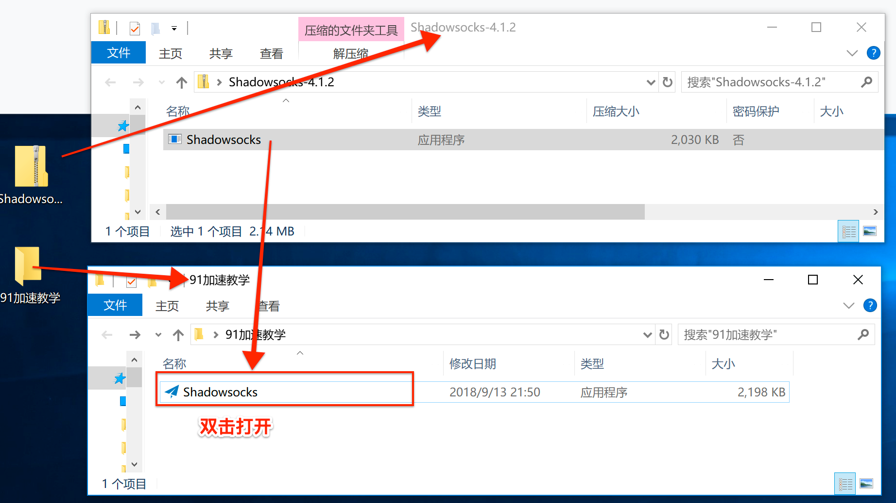
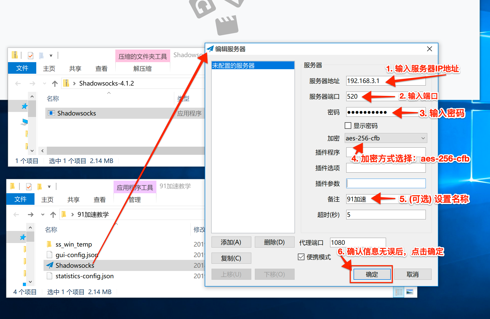
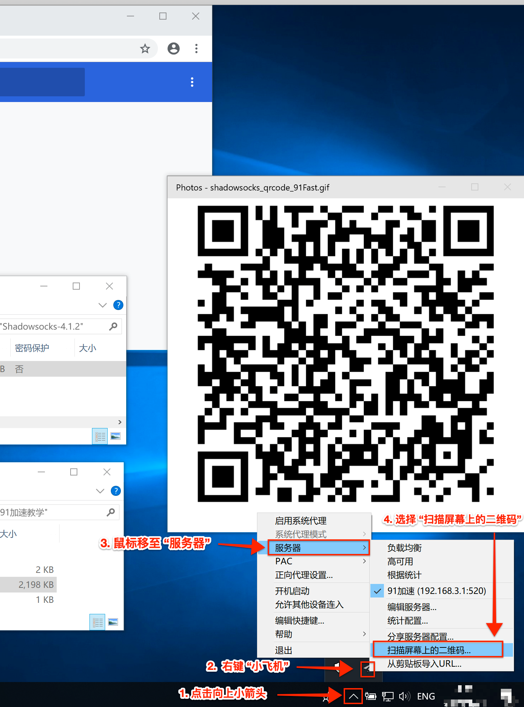
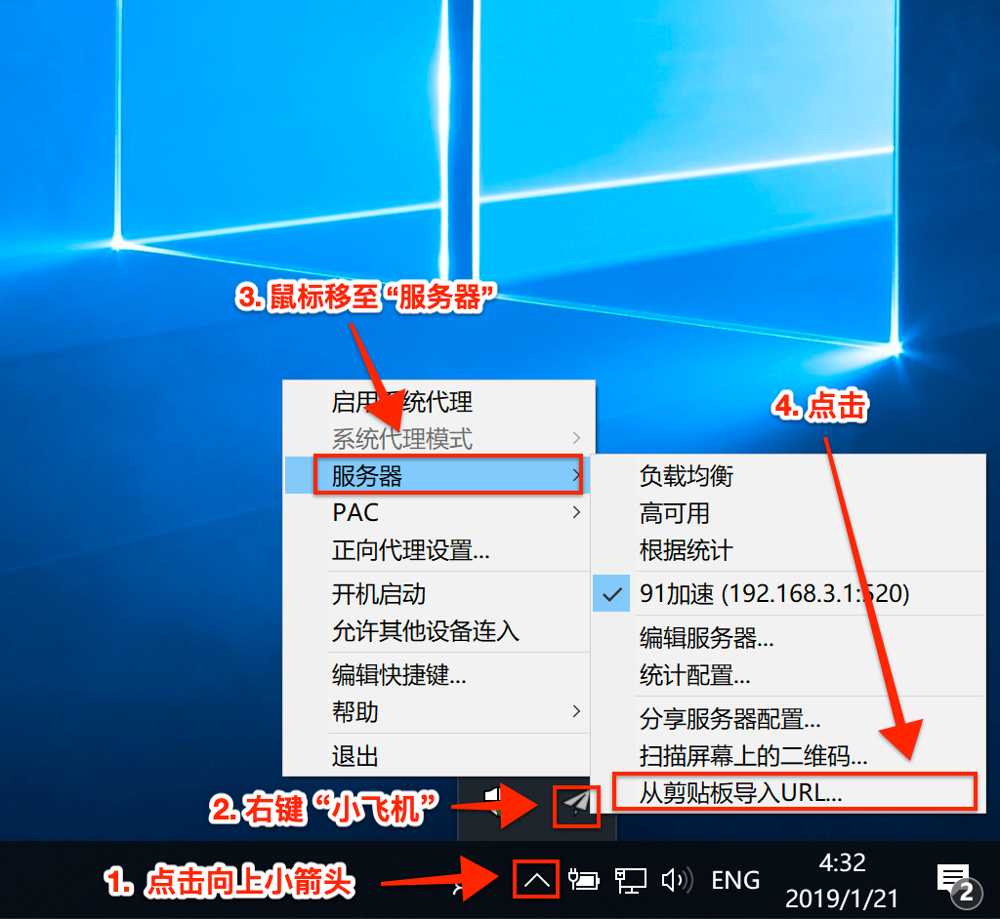
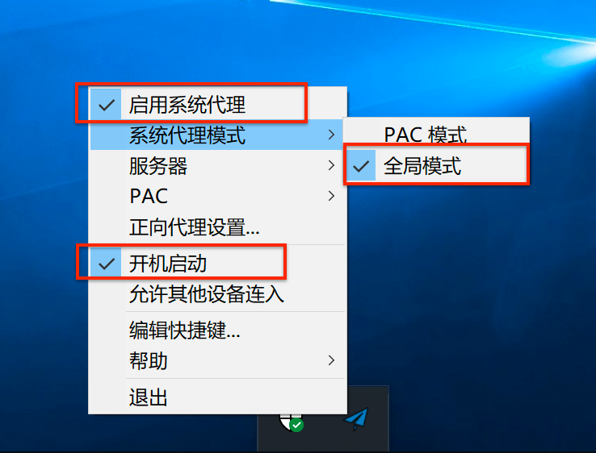
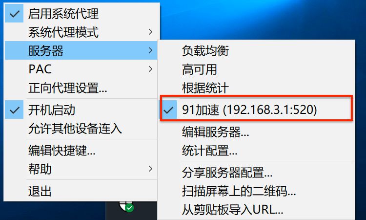

Windows 安装和使用教程
1. 申明
本教程适用于大部分 Windows 系统。建议您先浏览本文全文后再进行操作。 本教程仅供学术研究和交流！ 如果您是在微信中打开此教程，建议您通过电脑版浏览器浏览此教程，否则可能会影响软件的下载。
2. 安装系统补丁
为了保证客户端正常运行，建议您先安装系统两个补丁。请点击下方的链接下载。
* .NET Framework 4.6.2 *
* Visual C++ 2015 Redistributable（64位） *
请放心下载，这些补丁都是官方原版。您也可以自行前往官方下载。
* 官方补丁1 *
* 官方补丁2 *
补丁下载完成后，直接双击安装即可。如果您电脑已经安装了补丁或者高于此版本，点击关闭安装即可。

3. 下载安装 小飞机 - Shadowsocks
您可以在
* 开源社区 GitHub *
下载客户端。 我们提取了下载地址，在下方提供了便捷链接，可直接下载。
快 速 下 载
4. 安装
在桌面创建一个新的文件夹："91加速教学"。双击打开刚刚下载的压缩包，将 Shadowsocks 拖动到刚刚创建的文件夹中。

5. 添加配置
当您安装完成后，系统会自动打开。接下来，您有3种方式添加配置（手动添加、扫描二维码、复制链接），您可以随意选择一种添加配置。客服咪咪都会将这三种配置的参数发送给您。注意：图中数据为展示数据，请勿复制图中数据。
5.1 手动添加配置

5.2 扫描二维码添加配置
请先将微信中的二维码发送到电脑上，或者您可以直接登陆电脑端的微信，打开二维码即可。注意：二维码最好不要被其它窗口遮挡了。

5.3 通过URL添加配置
您需要先登陆电脑端的微信，然后复制客服发给您的URL，这样才能将URL复制至剪切板。格式就像这样的 -> ss://Y212JBASJK@0.0.0.0:520#91

6. 启用


7. 其它说明
当您在观看91视频或者下载视频时，尽量选择 “全局模式”。如果您希望进一步了解关于 PAC 模式的应用，可自行Google “windows ss pac 配置”。 注意：经测试，如果使用PAC模式，部分91视频是无法加速的哦。 如果服务器有更新，客服咪咪会自动向您发送更新后的信息，您只需要修改一下服务器地址即可，其它信息不变。
8. 完美！您现在已可以加速91资源了，~ ^_^。使用过程中请遵守相关的法律法规哦！
9. 【重要】建议您在科学上网的时候，将360安全卫士，腾讯管家之类的安全卫士退出。这些安全卫士很可能会记录您的上网信息，并上报GFW，导致您无法继续加速，严重情况会被查水表哦。或者您在不需要加速的时候，将 App 关闭/退出 即可。
×
"未受信任的企业级开发者"的解决办法
因苹果公司的政策原因，在iOS系统中首次安装企业版应用时会出现"未受信任的企业级开发者"提示
解决办法如下（以iOS11系统为例）：
1、在手机中打开设置功能，选择"通用"
2、在通用中，选择"描述文件与设备管理"功能
3、在描述文件与设备管理中的企业级应用分类中，选择要安装的企业应用的文件名称（与打开时的提示一致），点击进入
4、进入企业签名页面后，确认企业签名中的公司名称与应用名称后，点击信任"企业签名公司名称"
5、回到桌面，重新打开应用即可使用
一键跳转，立即信任